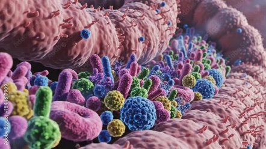

Microbiota, microbioma y salud intestinal
La microbiota es el conjunto de microorganismos —bacterias, hongos, virus y otros— que viven en nuestro cuerpo, especialmente en el intestino. El microbioma incluye estos microorganismos, su material genético y las sustancias que producen.
El ser humano alberga una enorme cantidad de microorganismos que cumplen funciones esenciales: ayudan a digerir alimentos, producen vitaminas, regulan el metabolismo, protegen frente a infecciones y colaboran en el desarrollo del sistema inmunitario.
Formación y evolución de la microbiota
La colonización comienza muy temprano en la vida y se va modificando según factores como el tipo de parto, la lactancia, la dieta, el uso de antibióticos y el estilo de vida. Durante la infancia la microbiota es menos estable y más variable entre individuos. En la edad adulta adquiere mayor estabilidad, y en personas mayores puede sufrir cambios asociados al envejecimiento.
¿Qué es una microbiota equilibrada?
No existe una microbiota "única" o universal, pero sí características asociadas a buena salud intestinal:
- Alta diversidad de microorganismos.
- Equilibrio entre los principales grupos bacterianos.
- Producción de metabolitos beneficiosos, como los ácidos grasos de cadena corta.
Cuando este equilibrio se altera hablamos de disbiosis, que puede relacionarse con diversas enfermedades, entre ellas la infección por Clostridioides difficile.
Microbiota y microbioma
¿Qué es la microbiota?
- Bacterias, virus y hongos
- Digestión y metabolismo
- Inmunidad y protección
¿Qué es el microbioma?
- Microbiota y su material genético
- Sustancias que produce
Formación y evolución
Microbiota equilibrada
- Diversidad microbiana
- Equilibrio entre grupos bacterianos
- Ácidos grasos de cadena corta
Disbiosis: alteración de este equilibrio
